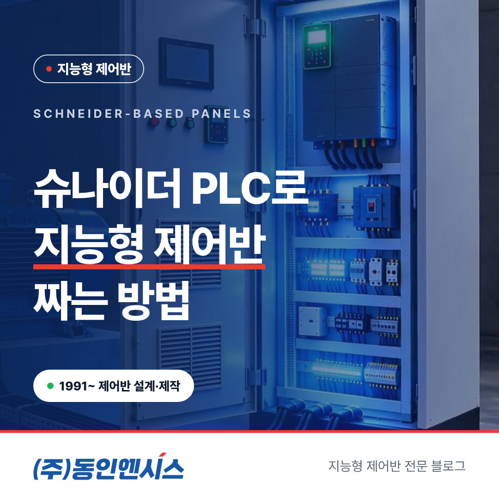
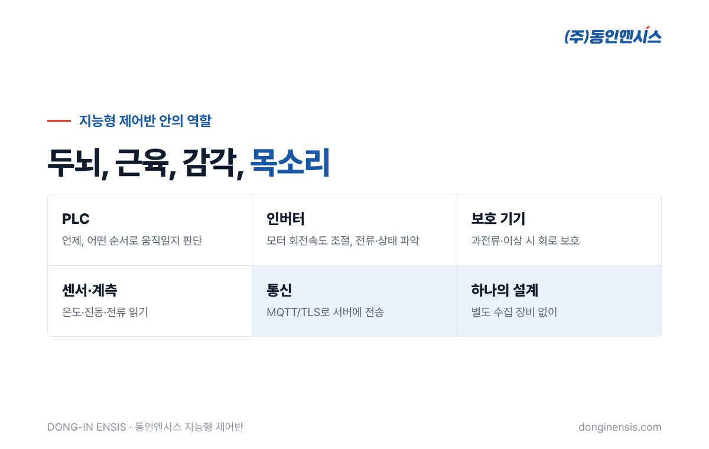
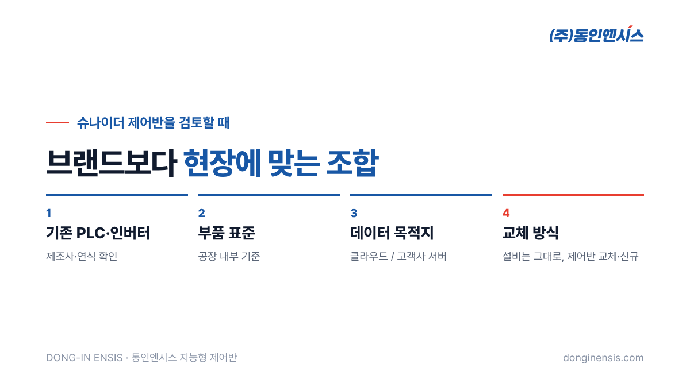

제어반 견적을 받으면 부품 목록에 낯익은 이름들이 보입니다. 그중에서도 PLC와 인버터는 제어반의 두뇌와 근육에 해당하는 핵심 부품입니다. 부산의 제어반 전문 기업 동인엔시스는 슈나이더 일렉트릭과 공식 SI 파트너 관계를 맺고, 이 회사의 PLC와 인버터를 뼈대 삼아 지능형 제어반을 만들어 왔습니다. 회사가 문을 연 1991년 이후 쌓아 온 설계·제작 경험이 그 바탕입니다. 이 글에서는 슈나이더 제어반이 지능형 제어반으로 짜이는 방식을 부품의 역할부터 차례로 풀어 보겠습니다.
SI는 시스템 통합(System Integration)의 줄임말입니다. 부품을 파는 데서 끝나지 않고, 그 부품을 엮어 실제로 동작하는 시스템을 만들어 내는 역할을 말합니다.
제어반으로 보면 차이가 분명합니다. 같은 PLC와 인버터를 사도, 어떤 순서로 설비를 움직일지 프로그램을 짜고, 보호 장치와 어떻게 엮을지 설계하고, 현장에서 시운전까지 마쳐야 비로소 쓸 수 있는 제어반이 됩니다. 동인엔시스는 설계와 제작, PLC·인버터 프로그램, 시운전을 모두 자체 엔지니어가 맡습니다. 부품 제조사의 공식 SI 파트너라는 것은 이 과정을 해당 제품 기준에 맞춰 수행할 수 있다는 뜻으로 이해하시면 됩니다. 고객 입장에서는 부품과 프로그램, 시운전의 책임 창구가 하나로 모인다는 의미도 있습니다.

지능형 제어반 안의 핵심 부품은 각자 맡은 일이 다릅니다.
| 부품 | 맡는 일 | 비유 |
|---|---|---|
| PLC | 설비를 언제, 어떤 순서로 움직일지 판단 | 두뇌 |
| 인버터 | 모터의 회전속도를 조절 | 근육의 힘 조절 |
| 보호 기기 | 과전류·이상 상황에서 회로를 지킴 | 안전벨트 |
| 센서·계측 | 온도·진동·전류 등 상태를 읽음 | 감각 |
| 통신 장치 | 데이터를 서버로 보냄 | 목소리 |
일반 제어반에서는 앞의 세 가지가 중심입니다. 지능형 제어반은 여기에 센서와 통신까지 하나의 설계로 묶습니다. PLC가 설비를 제어하면서 동시에 상태 값을 모으고, 별도 수집 장비 없이 MQTT/TLS로 클라우드나 고객사 서버에 보내는 구조입니다.
PLC는 설비가 켜지고 꺼지는 순서, 이상 시 멈추는 조건, 다른 설비와 주고받는 신호를 모두 담는 곳입니다. 지능형 제어반에서는 이 PLC가 데이터의 출발점이 됩니다.
설비를 제어하려면 어차피 운전 상태와 각종 신호를 알아야 합니다. 그렇다면 그 신호를 제어에만 쓰고 버릴 것이 아니라, 정리해서 남기고 보내면 됩니다. 그래서 PLC 프로그램 안에는 설비를 움직이는 로직과 함께, 세 상의 권선온도와 베어링 온도, 진동, 전기 쪽 값들을 정해진 주기로 읽어 정리하는 로직이 같이 들어갑니다. 읽은 값은 센서마다 기준값과 비교해 정상·경고·알람으로 표시됩니다.
인버터는 모터에 들어가는 전기의 주파수를 바꿔 회전속도를 조절합니다. 펌프나 팬을 늘 최고 속도로 돌리지 않고 필요한 만큼만 돌리게 해 주는 장치입니다.
인버터는 속도를 조절하는 동시에 모터에 흐르는 전류와 운전 상태를 알고 있습니다. 이 정보를 PLC와 주고받으면, 모터가 얼마나 힘들게 돌고 있는지를 따로 장비를 달지 않고도 파악할 수 있습니다. 제어를 위해 들여놓은 부품이 데이터의 원천이 되는 셈입니다. 예를 들어 같은 유량을 내는데 인버터 출력 전류가 서서히 늘어난다면, 펌프 안에 이물질이 끼었거나 베어링이 닳고 있다는 신호일 수 있습니다. 속도를 조절하는 장치가 동시에 설비의 건강 상태를 알려 주는 창구가 되는 것입니다.
Photorealistic close-up photo inside an open light-grey industrial control cabinet: a compact PLC with I/O modules on a DIN rail at the top, two variable frequency drives mounted below with small displays (no readable text), circuit breakers and neat wiring ducts, soft even lighting, generic unbranded devices, no brand logos, no readable text. 3:2 landscape.
PLC와 인버터, 보호 기기를 같은 제조사 제품으로 맞추면 몇 가지 장점이 있습니다.
그렇다고 한 브랜드만 고집하지는 않습니다. 유럽과 일본의 여러 제조사와도 공급 파트너로 일하고 있어서, 기존 설비와 맞춰야 하거나 고객사에 정해진 부품 표준이 있으면 그에 맞는 조합으로 구성합니다. 중요한 것은 브랜드보다 현장에 맞는 조합입니다. 같은 슈나이더 제어반이라도 설비와 환경에 따라 들어가는 PLC 계열과 인버터 용량이 달라집니다.
배에 들어가는 제어반은 선급의 승인을 받아야 합니다. 이때 핵심 부품이 해상용 인증을 갖추고 있으면 승인 과정이 한결 수월합니다. 슈나이더 계열 가운데 선박용으로 쓰는 컨트롤러는 Modicon M262로, 선급끼리 서로 인정하는 인증서를 갖추고 있습니다. 부품 단계의 확인 부담이 줄어드는 만큼, 배마다 거치는 도면 승인과 검사관 입회 시험에 집중할 수 있습니다.

이 정도가 정리되면 현장 분석에서 어떤 구성이 맞을지 빠르게 판단할 수 있습니다. 특히 첫 번째 항목이 중요합니다. 같은 공장 안에 여러 제조사의 PLC가 섞여 있다면, 새 제어반을 어느 계열로 맞출지에 따라 앞으로의 정비 방식과 예비 부품 관리가 달라지기 때문입니다. 슈나이더 제어반으로 통일할지, 기존 계열을 살릴지는 이 그림을 보고 함께 정합니다.
Photorealistic photo of a closed light-grey industrial control cabinet with a small color touchscreen and green, yellow and red indicator lamps on its door, installed beside a blue motor-driven pump in a clean Korean factory, a Korean engineer in a navy jacket checking the touchscreen, documentary style, no brand logos, no readable text. 3:2 landscape.
Q. 기존 설비에 다른 회사 PLC가 있어도 슈나이더 제어반으로 바꿀 수 있나요? 가능합니다. 설비는 그대로 두고 제어반을 교체하는 방식이라, 현장 분석에서 기존 배선과 동작을 확인한 뒤 구성안을 드립니다. 기존 PLC를 유지하고 데이터만 읽어 오는 방법도 함께 검토합니다.
Q. PLC 프로그램은 누가 만드나요? 동인엔시스 엔지니어가 직접 짜고, 공장검사와 현장 시운전까지 같은 엔지니어가 맡습니다.
Q. 부품 모델은 어떻게 정하나요? 설비 수와 모터 용량, 수집 항목, 통신 환경, 설치 환경을 보고 현장 분석 후 정합니다.
좋은 부품을 쓰는 것만으로 좋은 제어반이 되지는 않습니다. PLC와 인버터, 보호 기기, 센서와 통신이 하나의 설계 안에서 맞물릴 때 설비를 지키고 데이터를 남기는 지능형 제어반이 됩니다. 동인엔시스는 750건이 넘는 현장에서 그 조합을 다듬어 왔습니다.
제어반 상담 051-862-3668 · dongin@donginmne.com
아래 질문 중 하나에 실제 경험으로 답해 본문 적당한 곳에 넣어 주세요. 사람이 직접 쓴 문장이 들어가면 네이버에서 저품질 위험이 줄고 노출에 도움이 됩니다.